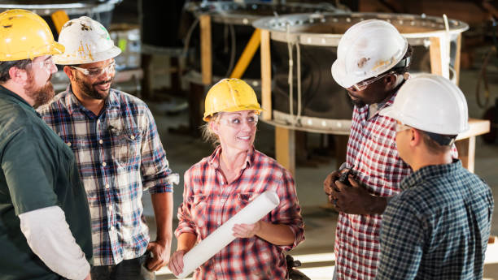

Our Vision:
At Gefre Custom Designs, our vision is to be the leading provider of innovative and high-quality metal fabrication solutions, deeply rooted in our family values and commitment to excellence. We strive to:
- Innovate Continuously: Embrace cutting-edge technologies and creative approaches to deliver exceptional products that meet the evolving needs of our customers, while honoring the craftsmanship traditions passed down through generations.
- Foster Community: Build strong, lasting relationships within our community and industry, contributing to local growth and supporting future generations of craftsmen and women. We believe in giving back to the community that has supported us for decades.
- Sustain Excellence: Uphold the highest standards of quality and service, ensuring every project reflects our dedication to precision and customer satisfaction. Our family’s name is our guarantee of quality.
- Inspire Legacy: Honor our family heritage by maintaining the values of hard work, honesty, and innovation that have defined our business for generations. We aim to inspire future generations of the Gefre family to carry on our legacy with pride and dedication.
- Mentor the Next Generation: Invest in the future by mentoring young talent, providing training and opportunities for the next generation of metalworkers. We are committed to nurturing their skills and passion, ensuring the continued growth and success of our industry.
We envision a future where Gefre Custom Designs is synonymous with superior metalwork, trusted partnerships, and a relentless pursuit of perfection, all while staying true to our family roots and values.